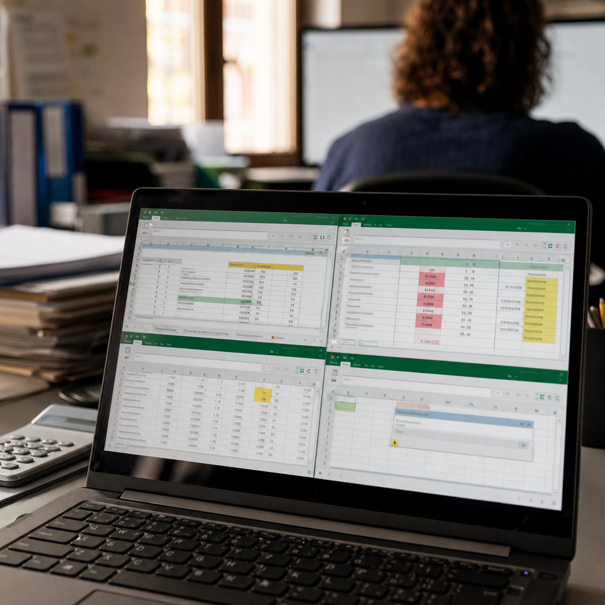
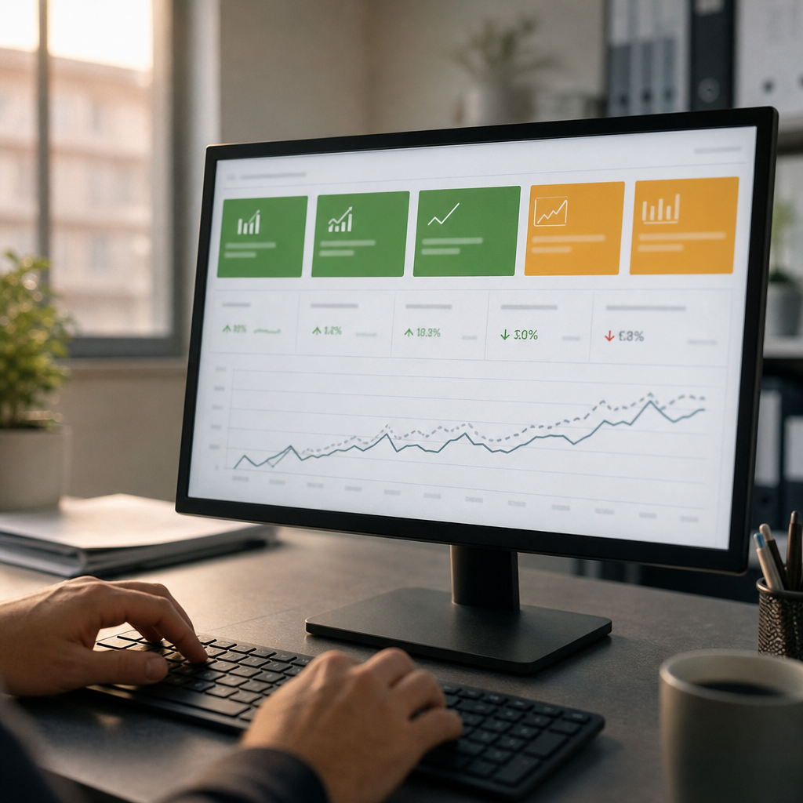

Blog · AI controllo di gestione
Ogni mese il controller riparte da zero: export ERP, Excel da riconciliare, budget su file separati. Quando il cruscotto è pronto, sono passati 10 giorni e i numeri parlano già del passato. Il problema non è la bravura del controller — è un processo costruito per un'azienda che non si muove. Questa pagina spiega perché succede, dove si inceppa il solito rimedio con i BI tool, e quale categoria di strumento risolve il problema davvero.
Il controller arriva al 2 del mese e sa già com'è andata: apre l'ERP, esporta le righe di conto economico, le incolla in Excel, le riconcilia con il budget caricato su un altro foglio, aggiusta le formule rotte, aspetta che il collega dell'amministrazione carichi gli ultimi pagamenti. Quando il cruscotto è pronto e condivisibile con la direzione, sono passati tra 8 e 12 giorni lavorativi. Parliamo di metà mese.
Nel frattempo la direzione prende decisioni su margini e costi usando i dati del mese precedente, o peggio ancora dati trimestrali. In una PMI con 15–80 dipendenti, dove ogni linea prodotto pesa, una settimana di ritardo nella lettura dei numeri equivale a una settimana in cui il problema è già cresciuto senza che nessuno l'abbia visto. Un margine che scivola dal 28% al 21% su una linea prodotto rimane invisibile per settimane se il reporting parte tardi.
Il costo non è solo il tempo del controller — spesso una figura che costa tra €40.000 e €70.000 annui lordi. Il costo reale è nelle decisioni prese con dati sfasati: acquisti sbagliati, prezzi non aggiornati, linee in perdita tenute in vita per inerzia. Una settimana persa ogni mese a ricostruire il cruscotto è una settimana in cui l'azienda naviga con numeri ritardati di trenta giorni.
I tool di Business Intelligence — Power BI, Tableau, Qlik — sono stati venduti per anni come la soluzione al reporting lento. Connetti l'ERP, costruisci le dashboard, fai vedere i grafici alla direzione. In teoria funziona. In pratica, una PMI italiana con un ERP gestionale verticale (Zucchetti, Sistemi, TeamSystem, AS400 personalizzato) e dieci anni di storia in fogli Excel non ha dati puliti pronti da connettere. Ha strutture dati eterogenee, codici conto duplicati, budget su file separati aggiornati a mano.
Il BI tool si ferma esattamente dove inizia il problema: a monte. Richiede che i dati siano già strutturati, normalizzati, in un data warehouse. Qualcuno deve costruire e mantenere quella pipeline. Nelle PMI non c'è un data engineer interno. Il risultato è che il controller passa dal costruire Excel al costruire query e aggiornare connessioni rotte ogni volta che l'ERP cambia struttura di esportazione. Il lavoro manuale non sparisce, si sposta.
Una stima conservativa: circa il 60–70% delle PMI italiane sotto i 100 dipendenti che adottano un BI tool standard lo usa in modo parziale entro 18 mesi dall'acquisto. Le dashboard vengono aggiornate a mano o abbandonate. Un BI tool mostra dati. Non fa variance analysis, non genera commenti sugli scostamenti, non produce forecast a scenari. È una finestra sui numeri, non uno strumento di ragionamento su di essi.

La categoria corretta non è "BI tool" né "ERP avanzato". È un sistema di AI Controllo di Gestione & Reporting: un agente che legge gli export dell'ERP e i fogli Excel così come sono — senza pretendere dati puliti a monte — li riconcilia, aggiorna il cruscotto direzionale in automatico e produce testo interpretativo sugli scostamenti. La differenza rispetto a un BI standard è che l'agente non si limita a mostrare numeri: ragiona sugli scostamenti, li commenta, li confronta col budget e produce una variance analysis leggibile da un CFO in tre minuti.
Un sistema di questo tipo si compone di tre livelli distinti. Il primo è il layer di ingestione: legge file Excel, CSV e export ERP in formati eterogenei, normalizza le strutture e le riconcilia senza intervento manuale. Il secondo è il layer analitico: calcola gli actual vs budget per centro di costo e linea prodotto, genera il forecast rolling a 90 giorni con scenario base e scenario di stress, monitora i margini per soglia. Il terzo è il layer di comunicazione: produce commenti testuali sugli scostamenti rilevanti e fa scattare alert quando un indicatore supera o scende sotto la soglia impostata — senza che il controller debba andare a cercare il dato.
La parte critica — quella che fa la differenza tra un agente che funziona in produzione e un prototipo che si rompe al primo cambio di formato dell'ERP — sta nell'architettura di ingestione e nella logica di riconciliazione. Richiede competenza sia nella logica del controllo di gestione sia nelle architetture AI. Senza quella competenza specifica, si finisce con uno strumento fragile che il controller smette di usare al terzo mese.
Prima dell'intervento: il controller dedicava circa 9–10 giorni lavorativi ogni mese alla costruzione del report direzionale. Tre ERP export separati, due file Excel con il budget aggiornati da persone diverse, un foglio di riconciliazione interaziendale. Il cruscotto arrivava alla direzione intorno al 12–14 del mese successivo. La variance analysis era un commento scritto a mano in una slide PowerPoint, aggiornata quando il controller trovava il tempo. Nessun alert automatico: i margini per linea prodotto venivano letti una volta al mese, a consuntivo.
Dopo l'attivazione del sistema di AI Controllo di Gestione & Reporting: il cruscotto direzionale si aggiorna automaticamente il 2° giorno lavorativo del mese, appena l'ERP genera gli export di chiusura. La variance analysis con commento testuale è pronta nello stesso momento. Il forecast rolling a 90 giorni — scenario base e scenario di stress con ipotesi su volumi e costi variabili — è disponibile in tempo reale. Il controller ha recuperato circa 7–8 giorni lavorativi mensili, reindirizzati su analisi ad hoc e supporto alle decisioni commerciali. Il tempo di reazione a un margine anomalo è passato da 4–6 settimane a meno di 48 ore grazie agli alert per soglia.
Detto questo: questi risultati valgono per un'azienda con dati ragionevolmente consistenti nell'ERP e un controller che sa già leggere un conto economico. Se l'ERP è usato in modo discontinuo, se il budget non esiste o esiste solo in forma narrativa, se i centri di costo non sono codificati, il sistema richiede un lavoro preliminare di strutturazione prima di poter automatizzare qualcosa. L'AI Controllo di Gestione & Reporting amplifica la qualità dei processi esistenti: non li sostituisce quando mancano del tutto.

| Hai questo | Conviene |
|---|---|
| Fatturato sotto €1,5M, un solo conto economico senza centri di costo, nessun budget formale | Non vale un sistema custom: un foglio Excel strutturato bene costa zero e copre tutto |
| Fatturato tra €1,5M e €4M, ERP in uso, budget su Excel aggiornato a mano ogni trimestre | Un BI tool con connettore ERP già pronto può bastare se hai qualcuno che lo mantiene internamente |
| Fatturato sopra €4M, almeno 2 linee prodotto o business unit, budget mensile, controller dedicato anche part-time | Il sistema di AI Controllo di Gestione & Reporting ha ROI misurabile: recupera 7–10 giorni/mese e riduce il lag decisionale |
| Margini sotto pressione su una o più linee, direzione che chiede dati aggiornati più volte al mese, o CFO esterno (studio commercialista) che segue più clienti in parallelo | Ogni settimana senza alert automatici sui margini è una settimana di rischio non monitorato: il sistema va attivato prima della prossima chiusura |
Dipende da cosa intendi per "strano". Se l'ERP produce file CSV o Excel — anche con strutture poco ortodosse, colonne rinominate o righe di intestazione variabili — il layer di ingestione del sistema di AI Controllo di Gestione & Reporting è progettato per gestire proprio questa eterogeneità. La mappatura dei campi avviene una volta durante l'implementazione e viene testata su almeno 3–4 mesi di storico reale. Se invece l'ERP non ha nessuna funzione di esportazione e i dati escono solo tramite interfaccia grafica, il problema è a monte e va risolto prima. In quel caso serve una valutazione preliminare: possiamo dirvi in 30 minuti se il vostro caso è compatibile.
Il forecast rolling a 90 giorni si basa su tre input: lo storico actual dell'ERP (di solito 12–24 mesi), il budget approvato come benchmark di riferimento, e le ipotesi di scenario che impostate — crescita volumi, variazione costi delle materie prime, stagionalità. Lo scenario di stress applica automaticamente scostamenti negativi sulle variabili più sensibili per il vostro settore. L'affidabilità dipende dalla qualità dei dati storici: con 18+ mesi di dati puliti e centri di costo codificati, la deviazione sul forecast a 30 giorni si attesta, in casi tipici, tra il 5% e il 12%. Non è una previsione esatta — nessun modello lo è — ma è un ordine di grandezza utile per le decisioni di cassa e acquisti.
Sì, ed è uno degli scenari d'uso più efficaci. Un commercialista o CFO esterno che segue 5–10 clienti medi può configurare un'istanza del sistema di AI Controllo di Gestione & Reporting per ciascun cliente, con cruscotti separati, soglie di alert personalizzate per settore e margine, e un pannello di riepilogo che mostra in un colpo solo quali clienti hanno scostamenti rilevanti nel mese. Il vantaggio concreto: invece di passare 2–3 giorni al mese per cliente a ricostruire i numeri, i dati sono già aggiornati e si commentano solo le anomalie. Questo permette di aumentare il numero di clienti seguiti senza aumentare il team, o di alzare il livello di servizio su quelli esistenti.
Prossimo passo
Apri K-BOT e in 5 minuti ti diciamo se questa categoria di soluzione fa al caso della tua PMI, oppure se basta uno strumento off-the-shelf. Gratuito.
L'offerta K2-AI sulla categoria: cosa fa, come si integra, tempi e modalità.
Descrivi il tuo caso. K-BOT dice se vale custom o se basta uno strumento standard.
Se preferisci una call diretta, scrivici. Rispondiamo in 24 ore con una lettura onesta.